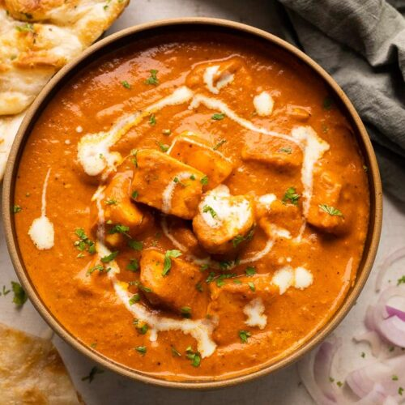

Home
Paneer Butter Masala

Soft paneer, rich gravy, pure bliss — Butter Masala Magic in Every Bite!!!
Paneer Butter Masala is a rich and creamy North Indian dish that combines soft paneer cubes with a luscious tomato-based gravy, infused with butter, cream, and aromatic spices. The perfect balance of tangy, sweet, and mildly spicy flavors makes it a favorite comfort food, often enjoyed with naan or steamed basmati rice. Every bite melts in your mouth, offering a taste of indulgent tradition in every spoonful.
Ingridients:
- Paneer (cottage cheese)
- Butter
- Tomatoes
- Onions
- Garlic
- Ginger
- Cashew nuts
- Fresh cream
- Green chilies (optional)
- Garam masala
- Red chili powder
- Turmeric powder
- Coriander powder
- Kasuri methi (dried fenugreek leaves)
- Salt
- Sugar (optional)
- Cooking oil or ghee
- Fresh coriander leaves (for garnish)
Steps:
- Soak cashew nuts in warm water for 10–15 minutes, then grind into a smooth paste.
- Heat butter in a pan and sauté chopped onions until golden.
- Add chopped garlic, ginger, and green chilies; sauté for a minute.
- Add chopped tomatoes and cook until soft and mushy.
- Let the mixture cool slightly, then blend into a smooth puree.
- In the same pan, heat some butter and add the blended puree.
- Add turmeric, red chili powder, coriander powder, and salt; cook until oil starts to separate.
- Stir in the cashew paste and a little water to adjust consistency.
- Add paneer cubes and simmer for 5–7 minutes on low heat.
- Sprinkle garam masala and crushed kasuri methi.
- Stir in fresh cream and a pinch of sugar (optional) for richness.
- Garnish with coriander leaves and a swirl of cream.
- Serve hot with naan, roti, or basmati rice.